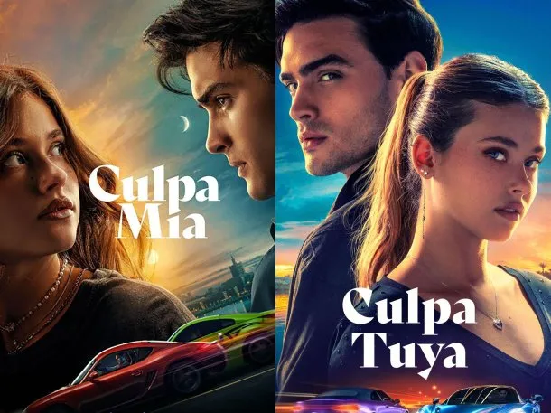

Videojuegos Recomendados
También te traemos reseñas de algunos de los videojuegos más importantes de los últimos años: The Last of Us Parte II, GTA V y FIFA 23.


Aquí encontrarás reseñas auténticas y entretenidas sobre libros, películas y videojuegos. Este sitio explora el mundo del entretenimiento, con el objetivo de ofrecer valoraciones claras y bien fundamentadas sobre historias, producciones y experiencias que han destacado por su calidad, impacto o popularidad. Si te interesa descubrir nuevas lecturas, emocionarte con el cine o explorar mundos virtuales a través del gaming, estás en el lugar indicado. Cada reseña busca ayudarte a encontrar contenidos que valgan la pena, adaptándose a distintos gustos y preferencias.
Descubre todo sobre la exitosa trilogía de Mercedes Ron: Culpa Mía, Culpa Tuya y Culpa Nuestra. Te contamos por qué estas historias están atrapando a miles de lectores y espectadores.
Las adaptaciones de esta trilogía no se quedan atrás. Desde Culpa Mía (2023) hasta la esperada Culpa Nuestra (2025), estas películas dan vida a la historia con gran fidelidad.
También te traemos reseñas de algunos de los videojuegos más importantes de los últimos años: The Last of Us Parte II, GTA V y FIFA 23.